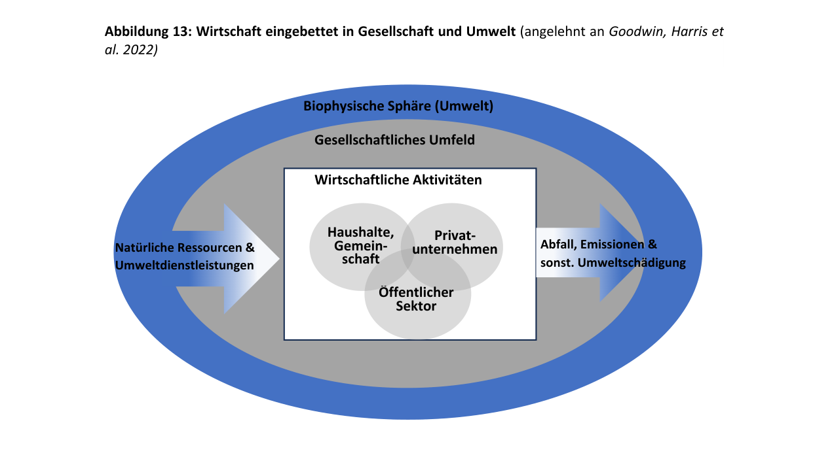
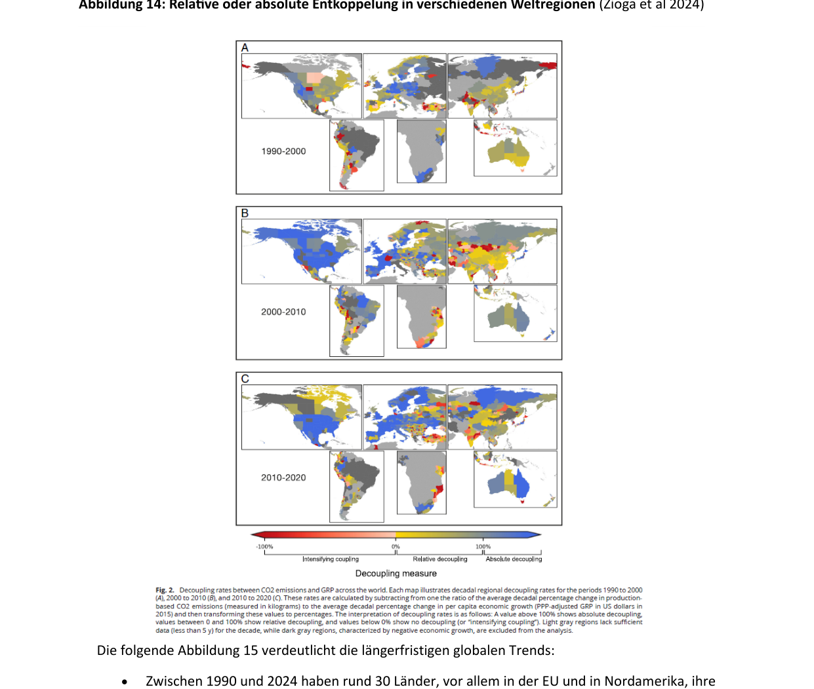
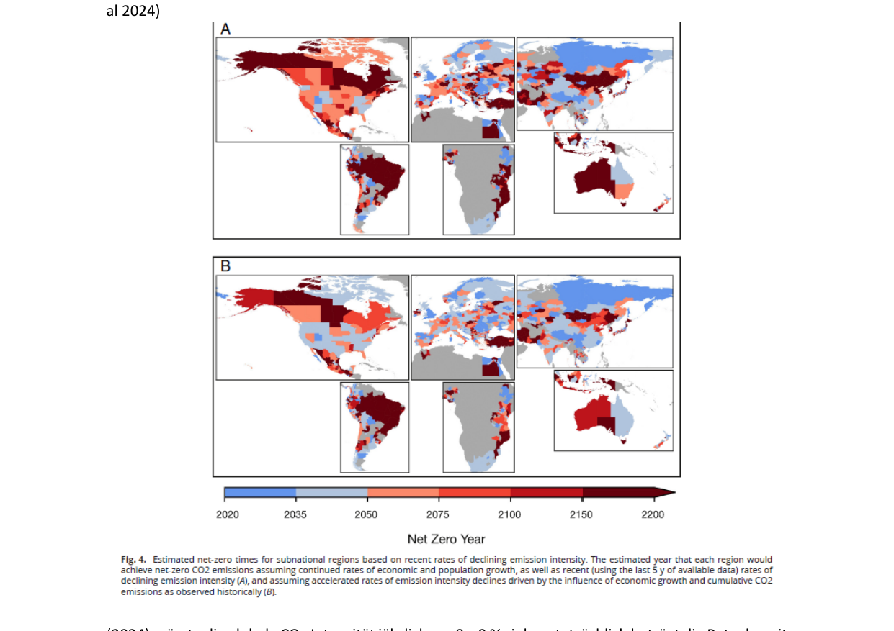
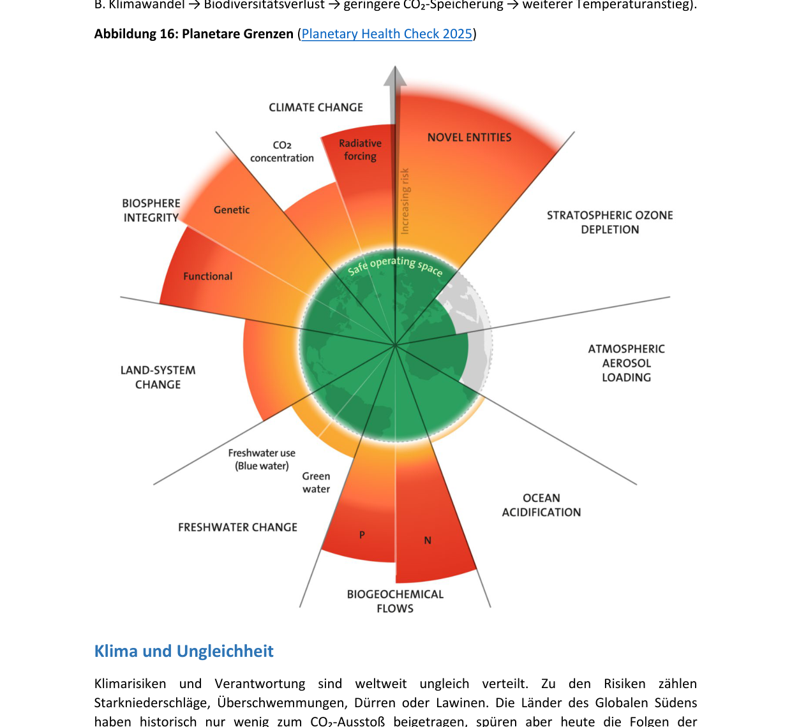
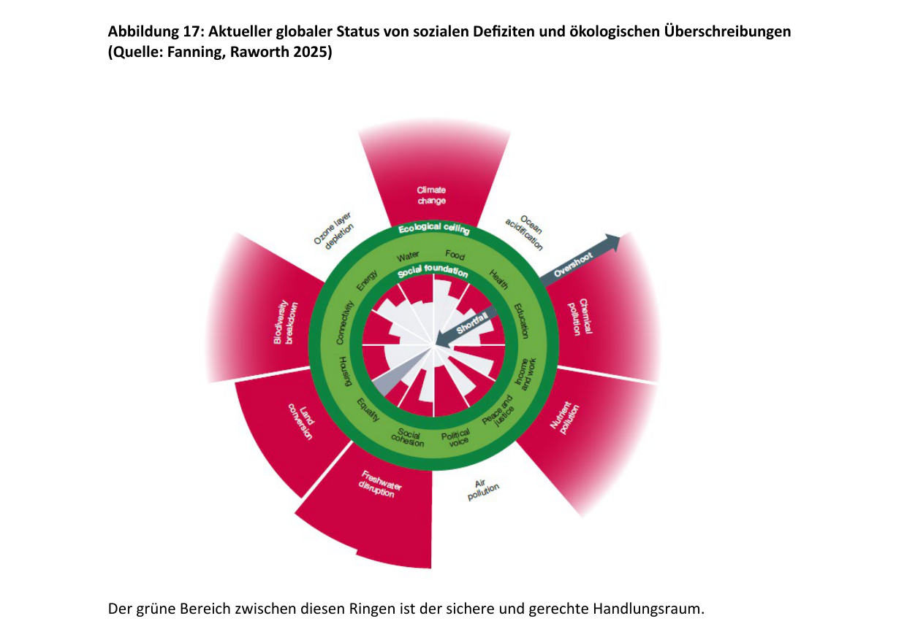

Глава 2: Экономика как часть общества и окружающей среды (Wirtschaft als Teil der Gesellschaft und Umwelt)
Благополучие людей, успех экономики и стабильность земной системы тесно взаимосвязаны. Экономика — это не изолированная, самодостаточная система, она встроена в общество и природу. Предприятия являются не просто производителями, но и социальными акторами, которые создают рабочие места, формируют условия труда, берут на себя социальную ответственность и способствуют внедрению инноваций.
В то же время общество формирует экономику множеством способов: оно обеспечивает институциональные рамки (institutionelle Rahmenbedingungen), такие как законы, права собственности, трудовые и социальные стандарты, которые снижают экономическую неопределенность и создают стабильность. Через образование, профессиональную подготовку и исследования общество обеспечивает квалификацию рабочей силы, а за счет социального сплочения и доверия способствует функционированию рынков и организаций. Общество и государство образуют не просто контекст, но и важнейший ресурс экономики — они обеспечивают сотрудничество, предсказуемость планирования и способность к инновациям.
Все виды экономической деятельности зависят от природных ресурсов и экосистемных услуг (Umweltdienstleistungen): вода, почва, энергия и биоразнообразие являются необходимыми условиями человеческого существования. Экономическая деятельность всегда осуществляется в рамках социальных структур и экологических границ.
2.1 Встроенность экономики в общество и окружающую среду (Einbettung der Wirtschaft in Gesellschaft und Umwelt)
Услуги природы не только незаменимы для производства благ (например, продуктов питания и ноутбуков) и услуг (например, туризма и страхования), но и составляют основу нашей экономической системы.
Экономическая деятельность осуществляется частными предприятиями, государственным сектором (Staat und NGOs), а также домашними хозяйствами и сообществами. Экономика извлекает ресурсы (Inputs) (природные богатства и экосистемные услуги, например, опыление продовольственных культур) из земной системы и возвращает в нее отходы (Outputs) (парниковые газы, мусор и т.д.), то есть в биофизическую сферу.
Рыболовство, сельское и лесное хозяйство, а также туризм в высокой степени зависят от наличия природных ресурсов и неповрежденных экосистем. Их долгосрочное существование напрямую зависит от сохранения и устойчивого использования этих природных основ.
Экономика встроена в социальную среду, которая формируется различными акторами:
- Государство (Staat): играет центральную роль, принимая законы, обеспечивая соблюдение нормативных требований и создавая экономические условия (например, через налоговую политику или экологические требования).
- Предприятия (Unternehmen): действуют в этих рамках, но также активно влияют на них через лоббирование (Lobbying), саморегулирование и инициативы в области корпоративной социальной ответственности (Corporate Social Responsibility, CSR).
- Гражданское общество (Zivilgesellschaft) (НКО, ассоциации, наука и СМИ): выступает в роли критического института, который подвергает сомнению экономические действия, тематизирует недостатки и формулирует общественные ожидания относительно устойчивого и этичного ведения бизнеса.
- Индивидуальные и коллективные акторы (потребители и работники): своим поведением (решения о покупке, мобильность рабочей силы, протесты) формируют экономические структуры и нормы. Взаимодействие этих акторов показывает, что экономические процессы всегда являются результатом социальных и политических переговоров.

Последствия разрушения окружающей среды
Разрушение окружающей среды оборачивается для экономики значительными издержками:
- Прямые последствия: разрушение инфраструктуры в результате экстремальных погодных явлений, перебои в производстве и рост страховых исков.
- Косвенные последствия: неурожаи, рост расходов на здравоохранение и потери производительности.
- Долгосрочные последствия: деградация экосистем, климатическая миграция, рост инвестиционных рисков и сбои в глобальных цепочках поставок.
Здоровые экосистемы служат естественной защитой от стихийных бедствий. Например, леса могут предотвращать или смягчать наводнения, накапливая дождевую воду и контролируемо высвобождая ее. В высокогорных районах они служат естественными барьерами против лавин, защищая поселения и дороги. Водно-болотные угодья (Feuchtgebiete) действуют как губки, впитывая и удерживая паводковые воды.
Разнообразие видов (биоразнообразие — Biodiversität) в экосистеме повышает ее устойчивость. Оно позволяет экосистеме адаптироваться к изменениям и быстрее восстанавливаться после сбоев. Защищая биоразнообразие, мы способствуем стабильности природных систем, что укрепляет сообщества, зависящие от этих экосистем. Биоразнообразие также является важным источником инноваций для фармацевтики, биотехнологий и сельского хозяйства.
2.2 Устойчивое развитие (Nachhaltigkeit)
Успешная в долгосрочной перспективе экономическая деятельность требует, чтобы предприятия и потребители учитывали последствия своих решений для других людей и окружающей среды. Система считается устойчивой, если экономическая деятельность осуществляется в биофизических границах планеты без разрушения естественных основ жизни. Устойчивые экономические структуры призваны удовлетворять потребности всех людей, одновременно способствуя социальной инклюзии (социальной интеграции — soziale Inklusion) и социальному сплочению. Ключевым фактором является то, как ресурсы извлекаются, используются и возвращаются в круговорот во избежание превышения экологических пределов.
Линейная модель против циркулярной экономики
- Линейная модель («Take – Make – Waste» / «Взять — произвести — выбросить»): Сырье извлекается, продукты производятся, потребляются и затем утилизируются без учета экологических последствий добычи ресурсов, выбросов или отходов. Такая модель ведет к росту загрязнения окружающей среды, истощению ресурсов и дестабилизирует ключевые системы (климат, биоразнообразие, земельные и водные ресурсы).
- Циркулярная (круговая) экономика (Kreislaufwirtschaft):
Проблема бедности
Трансформация экономики также направлена на борьбу с бедностью:
- Около 700 млн человек (8,5% мирового населения) живут в экстремальной бедности (extreme Armut) — менее чем на 2,15 доллара в день (в основном в Африке к югу от Сахары).
- Около 3,5 млрд человек (44% населения планеты) считаются бедными при черте бедности 6,85 доллара в день (показатель для стран со средним уровнем дохода).
- В Австрии понятие бедности иное: люди считаются находящимися под угрозой бедности (armutsgefährdet), если их доход ниже порога риска бедности, который в 2023 году составлял €1 572 в месяц для домохозяйства из одного человека (14,9% населения Австрии, около 1 314 000 человек).
Экономический рост часто рассматривается как решение проблемы бедности. Это создает дилемму: с одной стороны, текущий уровень глобальной экономической активности уже превышает несколько планетарных границ, с другой стороны, рост считается необходимым для сокращения бедности. Меры по борьбе с бедностью, основанные на ресурсоемком росте, могут создавать новые риски. Устойчивая трансформация требует подходов, которые обеспечивают экономическое развитие в биофизических границах планеты и способствуют социальной справедливости.
Исторический контекст и доклады
Одним из важнейших докладов XX века стал «Наше общее будущее» (Our Common Future), опубликованный в 1987 году Всемирной комиссией по окружающей среде и развитию (WCED) и также известный как «Доклад Брундтланд» (Brundtland-Bericht) (по имени председателя комиссии Гру Харлем Брундтланд). Доклад ввел понятие устойчивого развития (nachhaltige Entwicklung): это форма развития, которая удовлетворяет потребности настоящего времени, не ставя под угрозу способность будущих поколений удовлетворять свои собственные потребности. В качестве путей достижения предлагались: шеринговые модели (Sharing-Modelle), долговечный дизайн, восстановление бывших в употреблении деталей (Remanufacturing).
В рамках Европейского зеленого курса (European Green Deal, EGD) устойчивость стала ключевым понятием европейской экономической политики. С 2022 года отчетность в области устойчивого развития (Nachhaltigkeitsberichterstattung) является обязательной для крупных компаний, а Классификация экологически устойчивых видов деятельности (EU-Taxonomie) призвана способствовать экологическому инвестированию на рынке капитала.
Две концепции устойчивости
- Слабая устойчивость (schwache Nachhaltigkeit): Базируется на трехкомпонентной модели (Drei-Säulen-Modell), рассматривающей экологию, социальную сферу и экономику как равноценные столпы. Предполагает возможность компенсации потерь в одной области выгодами в другой. Природные ресурсы могут замещаться человеческими знаниями или капиталом, если совокупный капитал — природный (Naturkapital: леса, недра), человеческий (Humankapital: образование, квалификация) и физический (Sachkapital: заводы, машины) — остается стабильным или растет.
- Сильная устойчивость (starke Nachhaltigkeit): Подчеркивает фундаментальное значение экологических систем для экономики и общества. Определенные экологические функции (например, стабильный климат) незаменимы и не могут быть замещены экономическим или человеческим капиталом. Данная концепция требует сохранения естественных экосистем в максимально возможной степени.
2.3 Разделение экономического роста и экологического ущерба? (Entkopplung von Wirtschaftswachstum und Umweltschäden?)
Целью устойчивой экономической политики является ослабление связи между экономическим успехом и экологической нагрузкой. В прошлом рост ВВП был тесно связан с ростом потребления энергии, сырья и площадей, а также с ростом выбросов.
Различают две формы разделения:
- Относительное разделение (relative Entkopplung): Экологический ущерб растет медленнее, чем экономические показатели. Выбросы или потребление ресурсов увеличиваются, но менее высокими темпами, чем ВВП (например, ВВП вырос на 3%, а выбросы CO2 — на 1%). Экологическая нагрузка продолжает увеличиваться, но медленнее.
- Абсолютное разделение (absolute Entkopplung): Экологическая нагрузка снижается в абсолютном выражении, в то время как экономические показатели продолжают расти (например, ВВП вырос на 3%, а выбросы CO2 снизились на 4%).
Только абсолютное разделение гарантирует, что экономическое развитие не происходит за счет экологической стабильности.
Эмпирические данные


- Абсолютное разделение было успешно достигнуто для некоторых локальных загрязняющих веществ, таких как диоксид серы (SO2) или хлорфторуглероды (ХФУ / FCKW), благодаря технологическим альтернативам и международным соглашениям (Монреальский протокол).
- В случае с выбросами CO2 абсолютное разделение дается намного сложнее. Электрификация транспорта, логистики и теплоснабжения ведет к росту эффективности, однако выбросы парниковых газов в промышленности остаются тесно связанными с энергопотреблением.
- Технологии очистки на выходе («End-of-Pipe»-Technologien, например, фильтры) разработаны для SO2 и ХФУ, но для полного улавливания CO2 масштабируемых технологий пока нет. Улавливание и хранение углерода (Carbon Capture and Storage, CCS) технически возможно, но дорого и энергоемко. В Австрии технология CCS разрешена только для отраслей с трудносокращаемыми выбросами («hard-to-abate»-Branchen, например, цементная промышленность или утилизация отходов).
Структурные вызовы
- Утечка углерода (Carbon Leakage): Перенос производства и выбросов в другие регионы мира с менее строгими экологическими стандартами. В таком случае снижение выбросов в одной стране компенсируется их ростом в другой.
- Эффект отскока (Rebound-Effekte): Рост эффективности снижает издержки, что часто ведет к увеличению совокупного спроса на энергию и товары (например, более экономичные приборы используются чаще или покупаются в большем объеме, что нивелирует экономию ресурсов).
Абсолютное разделение требует не только технологий, но и политических мер (налогообложение CO2, субсидирование возобновляемых источников энергии), системных изменений в энергетике, транспорте и продовольственной сфере, а также изменения поведения потребителей и бизнеса.
В период с 1990 по 2024 год около 30 стран (в основном в ЕС и Северной Америке) добились абсолютного сокращения выбросов CO2 при одновременном росте ВВП. Глобальная эмиссия CO2 на единицу ВВП (эмиссионная интенсивность — Emissionsintensität) снизилась примерно на 40%, но общие мировые выбросы продолжили расти, так как экономический рост перекрыл рост эффективности. Для достижения климатической нейтральности к 2050 году глобальная интенсивность выбросов CO2 должна снижаться на 8–9% ежегодно (сейчас этот показатель составляет менее 2%).
2.4 Экономическая деятельность в пределах планетарных границ (Wirtschaften innerhalb der Erdsystemgrenzen)
Экономическая деятельность в рамках планетарных границ требует соблюдения ограничений по выбросам.
Оставшийся углеродный бюджет для удержания потепления в пределах 1,5°C (с вероятностью 50%) составляет около 380 миллиардов тонн CO2 (GtCO2). При текущих темпах выбросов этот бюджет будет исчерпан всего за 9 лет. В Австрии выбросы парниковых газов начали снижаться в 2022 году, однако темпы сокращения не соответствуют целям Регламента ЕС о совместном распределении усилий (Effort-Sharing-Verordnung).
Порог в 1,5°C является важным ориентиром, но ученые (например, Йохан Рокстрём) отмечают, что это скорее политически выбранный предел риска, основанный на превентивных соображениях, а не фиксированная физическая граница. Превышение этого порога опасно из-за существования точек перелома / критических элементов земной системы (Kippelemente). Эти системы (гренландский и западноантарктический ледяные щиты, атлантическая меридиональная циркуляция, тропические коралловые рифы) при потеплении от 1,5°C до 2°C могут перейти в нестабильное состояние, вызвав необратимые изменения.
Климатический кризис — лишь одна из нескольких границ земной системы. Учеными были определены девять планетарных границ (planetary boundaries), превышение которых создает значительные риски:
- Климатическая система (Klimasystem): глобальное потепление \(\approx 1,2^\circ\text{C}\); концентрация \(CO_2 > 420\text{ ppm}\).
- Целостность биосферы (Integrität der Biosphäre): массовая утрата биоразнообразия, темпы вымирания видов более чем в 100 раз превышают естественный уровень.
- Изменение землепользования (Landnutzungsänderung): более 40% свободной ото льда суши используется под нужды сельского хозяйства.
- Биогеохимические циклы (Biochemische Kreisläufe) (азот и фосфор): широко распространенное закисление почв и евтрофикация (загрязнение удобрениями водоемов).
- Доступность пресной воды (Süßwasserverfügbarkeit): изъятие воды в глобальном масштабе превышает возможности ее естественного восполнения.
- Введение новых веществ (Einbringung neuartiger Substanzen): накопление в окружающей среде химикатов, микропластика и пестицидов.
- Закисление океана (Versauerung der Ozeane): падение уровня pH превысило безопасный порог.
В пределах безопасной зоны (sicherer Bereich):
- Стратосферный озон (Stratosphärisches Ozon): успешное восстановление благодаря Монреальскому протоколу.
- Аэрозольная нагрузка на атмосферу (Atmosphärische Aerosolbelastung): в глобальном масштабе находится в пределах зоны допуска, но критична на региональном уровне.

Климат и неравенство
Климатические риски и ответственность распределены крайне неравномерно:
- Страны Глобального Юга исторически внесли минимальный вклад в выбросы CO2, но сильнее всего страдают от засух, наводнений и экстремальных осадков.
- Историческая ответственность за выбросы: США — 40%, страны ЕС-28 — 29%, остальная Европа — 13%, прочий Глобальный Север — 10%, Глобальный Юг — 8%.
- Самый богатый 1% населения планеты ответственен за вдвое больший объем выбросов CO2, чем беднейшие 50%. В 2021 году выбросы 10% самых богатых людей составляли в среднем 22 тонны CO2 на душу населения (более чем в 200 раз превышает уровень беднейших 10%). Если богатейшие 10% сохранят текущий уровень потребления, они одни исчерпают оставшийся углеродный бюджет к 2046 году.
2.5 Социальное благополучие как цель устойчивого хозяйствования (Soziales Wohlbefinden...)
Центральным вопросом экономики является ее назначение. Если экономика не служит благополучию людей (Wohlbefinden), она теряет свою легитимность.
Потребности, предпочтения, полезность
Для анализа благополучия важно различать следующие понятия:
- Потребности (Bedürfnisse): Объективные предпосылки человеческого существования (питание, здоровье, социальная принадлежность, безопасность). Они имеют этическую значимость, определяя стандарты достойной жизни.
- Предпочтения (Präferenzen): Субъективные оценки, формирующиеся под влиянием культуры, рекламы, стремления к статусу или социального сравнения. Они не всегда полезны с экологической или социальной точки зрения.
- Полезность (Nutzen): Краткосрочное удовлетворение, получаемое от реализации определенного предпочтения. Полезность ценностно нейтральна (Wertneutral) и отражает индивидуальные желания, а не справедливость или устойчивость.
- Субъективное благополучие (Subjective Well-being, SWB) и удовлетворенность жизнью (Lebenszufriedenheit): Отражают общую долгосрочную оценку человеком своей жизни (качество существования), в отличие от сиюминутных удовольствий (главное отличие от полезности). Экономический рост может временно увеличивать полезность, но снижать благополучие при росте социального неравенства, стресса или разрушения природы.
| Концепция | Что описывает? | Уровень | Значение для устойчивого развития |
|---|---|---|---|
| Потребности | Базовые условия для хорошей жизни | Объективный | Минимальный стандарт справедливости |
| Предпочтения | Индивидуальные желания и вкусы | Субъективный | Социально формируемые, не всегда устойчивы |
| Полезность | Теоретическая величина для объяснения выбора | Аналитический | Описывает потребительский выбор, но не благополучие |
| Субъективное благополучие (SWB) | Эмоциональная и когнитивная оценка жизни | Эмпирический | Индикатор качества жизни в обществе |
| Удовлетворенность жизнью | Долгосрочная оценка собственной жизни | Эмпирический | Мера эффективности политики и институтов |
| Счастье (Glück) | Краткосрочные положительные эмоции | Аффективный | Частный элемент благополучия |
Эмпирические детерминанты счастья
Согласно исследованиям (World Happiness Report 2025), рост доходов коррелирует с удовлетворенностью жизнью только до определенного порогового значения (точки насыщения). Более важными факторами являются:
- Здоровье, социальные связи, доверие и участие в жизни общества.
- Относительные сравнения (люди оценивают свое счастье в сравнении с доходами и статусом окружающих).
- Безработица и социальная нестабильность снижают благополучие сильнее, чем просто потеря дохода.
- Образование повышает удовлетворенность жизнью через чувство собственной эффективности (Selbstwirksamkeit) и перспективы занятости.
- Страны с высоким уровнем социального доверия, качественными государственными институтами и экологическим сознанием являются самыми счастливыми в мире (Скандинавия, Нидерланды, Новая Зеландия).
- Среди молодежи в Европе около 60% испытывают тревогу по поводу будущего климата и общества (данные Gallup 2023). Растет осознание того, что счастье связано с осмысленностью жизни и бережным отношением к природе, а не с материальным потреблением.
Модель «Пончика» Кейт Раворт (Doughnut-Modell)
Модель объединяет две целевые границы:
- Социальный фундамент (soziale Basis): базовые потребности человека (вода, еда, здоровье, образование, доход, справедливость, жилье, гендерное равенство).
- Экологический потолок (ökologische Decke): планетарные границы земной системы. Зеленая зона между ними представляет собой безопасное и справедливое пространство для человечества (sicherer und gerechter Handlungsraum). Эмпирические данные Doughnut Monitor 2025 показывают, что сейчас ни одна страна не обеспечивает все социальные стандарты, оставаясь в рамках экологических ограничений.

Богатые страны превышают экологический потолок, а бедные не достигают социального фундамента.2.6 Общественные предпосылки субъективного благополучия и устойчивости
Концепция потребительских и производственных коридоров
-
Потребительский коридор (Konsumkorridor): Определяет диапазон потребления между:
- Социальным минимумом (что необходимо для хорошей жизни).
- Экологическим максимумом (какую нагрузку планета может выдержать в долгосрочной перспективе). Например: недоедание находится ниже минимума, а избыточное потребление мяса и энергии — выше экологического максимума.
-
Производственный коридор (Produktionskorridor): Описывает, какие блага и услуги и в какой форме должны производиться для удовлетворения потребностей без превышения экологических лимитов.
- Достаточность (Suffizienz): Принцип разумного самоограничения («достаточно, но не слишком много»), который способствует более стабильному долгосрочному благополучию, в отличие от избыточного потребления.
Эмпирические исследования подтверждают: чистый воздух, зеленые насаждения и неповрежденные экосистемы напрямую повышают удовлетворенность жизнью, в то время как шум, загрязнение воздуха и застройка территорий (Flächenversiegelung) снижают ее. Согласно индикатору здорового пожизненного дохода (Healthy Lifetime Income) (Prettner et al. 2023), страны с более высокой ожидаемой продолжительностью жизни и качественным здравоохранением достигают значительно более высокого уровня благополучия даже при умеренном материальном достатке.
Устойчивая экономика должна интегрировать три измерения:
- Социальное: удовлетворение базовых потребностей для всех, снижение неравенства.
- Экологическое: сохранение активности в рамках планетарных границ.
- Психологическое: обеспечение субъективного благополучия и осмысленности жизни.